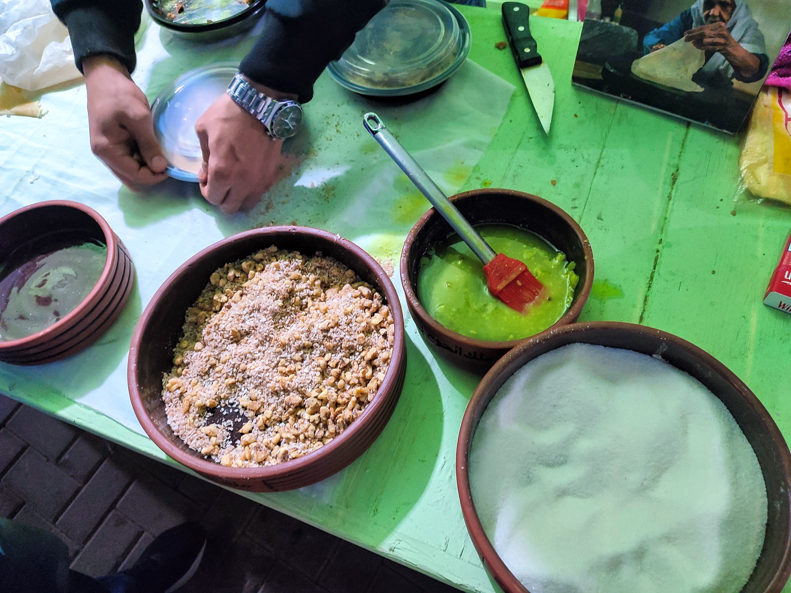
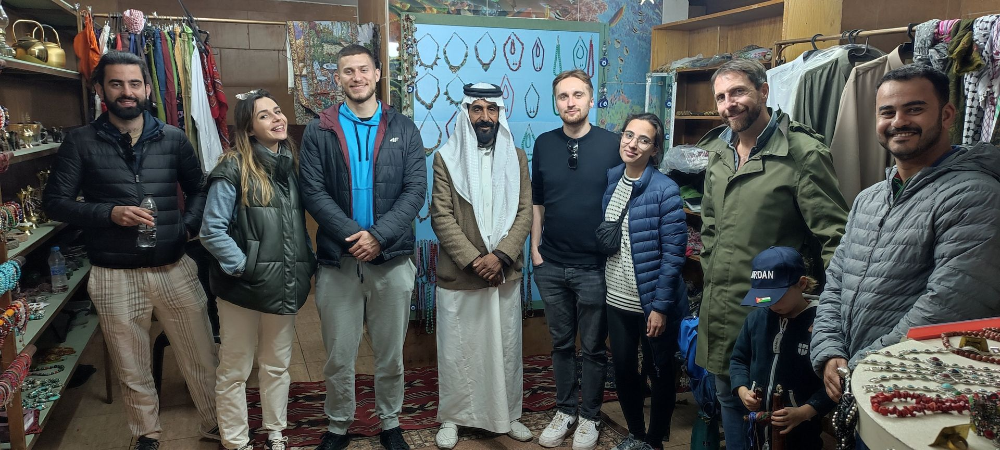

The Scents of the Souk: 5 Spices You Must Buy in Aqaba
February 20, 2026
Discover the essential spices of Jordanian cuisine found in Aqaba's souks, from tangy Sumac to the aromatic Mansaf blend...
Read MoreStories, tips, and inspiration from Aqaba and beyond.
February 20, 2026
Discover the essential spices of Jordanian cuisine found in Aqaba's souks, from tangy Sumac to the aromatic Mansaf blend...
Read More
January 15, 2026
Explore the rich history of Aqaba, from the ancient Islamic city of Ayla to its unique coastal culture, traditions, and the Mamluk Fort...
Read MoreDecember 8, 2025
Discover Sayadieh, the traditional fish and rice dish that is the culinary heart of Aqaba. A local's guide to this flavorful Red Sea delicacy...
Read More
December 8, 2025
Discover Al-Hooh, Aqaba's traditional layered dessert made with nuts, honey, and local butter. A true taste of local heritage...
Read More
November 25, 2025
Discover the real Aqaba with this local's guide to non-touristy things to do, including the best souks, street food, and hidden gems...
Read More